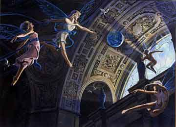

La storia di ARELIA può essere suddivisa in quattro grandi partizioni:
MITOLOGIA ARELIANA Prima della Guerra degli Dei la storia di Arelia si confonde con la mitologia e la leggenda.
STORIA REMOTA La storia remota rappresenta la maggior
parte, a livello temporale, della storia di Arelia avendo inizio alla fine della
Guerra degli Dei, periodo le cui storie si confondono tra realtà e leggenda. La
storia remota ha poco a che fare con gli esseri umani la cui civiltà era ben
lungi dal nascere riguardando principalmente la storia dei semi-umani. Non a
caso tutti gli scritti e le opere di questo periodo storico fanno parte della
letteratura semi-umana. La storia remota ha termine proprio con lo sviluppo
della civiltà umana.
| Data secondo la numerazione contemporanea |
Data secondo il calendario nanico dal grande esodo |
STORIA ELFICA |
STORIA DEI NANI DEL MASSICCIO |
| 3150 a.n. | -- | Inizio dell'Era dei Draghi | -- |
| 2693 a.n. | -- | Fine dell'Era dei Draghi | -- |
| 1264 a.n. | 0 |
Inizia il Grande Esodo, Urgan è scelto come guida da parte del Grande Concilio |
|
| 1261 a.n. | 3 | Inizio della II Guerra Orchica | |
| 1255 a.n. | 9 | Fine della II Guerra Orchica | |
| 1232 a.n. | 32 | Inizio della III Guerra Orchica | |
| 1231 a.n. | 31 | Fine della III Guerra Orchica | |
| 1213 a.n. | 51 | L'esodo raggiunge i monti Cirs | |
| 1195 a.n. | 69 | Patto di Fratellanza stipulato tra i nani e gli gnomi dei Cirs | |
| 1194 a.n. | 70 | L'esodo raggiunge il Massiccio dell'Ovest, morte di Urgan | |
| 1187 a.n. | 77 | I clan nanici ottengono l'autonomia deponendo la reggenza di Ardan |
STORIA ANTICA
Secondo la scuola degli storici umani la storia antica ha inizio con la creazione del Regno del Nordor, il primo grande regno costituto dagli esseri umani, avvenuta nell'anno 0 della fondanzione del Regno del Nordor (letteralmente anno 0 r.n. corrispondente secondo la numerazione attuale all'anno 630 a.n.) ad opera di Re Norian I. L'organizzazione sociale di questa razza colonizzatrice, infatti, era stata in precedenza di natura tribale. Da questo momento, invece, iniziano a fiorire i testi storici redatti da scrittori umani (anche grazie all'influenza del culto di Loky), testi destinati a moltiplicarsi, mettendo in secondo piano la millenaria tradizione semi-umana, anche allo scopo di glorificare e diffondere le gesta della razza umana. Per gli storici la storia antica, quindi, ripercorre l'intero periodo di esistenza (durato 630 anni) del Regno del Nordor e successivamente dell'Impero del Nordor.
| Data secondo la numerazione contemporanea | Data secondo la numerazione Nordor |
STORIA UMANA DEL NORDOR |
||
| 630 a.n. | 0 r.n. |
Fondazione del Regno del Nordor ad opera di Norian I |
||
| 600 a.n. | 30 r.n. | Inizio della Guerra del Grande Nord | ||
| 569 a.n. | 61 r.n. | Fine della Guerra del Grande Nord | ||
| 408 a.n. | 222 r.n. | Inizio della campagna contro gli Akkan | ||
| 290 a.n. | 340 r.n. | Penetrazione del Culto di Tanatos nel Regno del Nordor | ||
| 233 a.n. | 397 r.n. | Proclamazione di Loon come Re del Nordor | ||
| 215 a.n. | 415 r.n. | Proclamazione dell'Impero del Nordor (Imperatore Loon) | ||
| 120 a.n. | 95 i.n. | Fondazione di Irk ad opera dell'Imperatore Aracom | ||
| 0 a.n. | 215 i.n. | Scomparsa dell'Impero del Nordor, caduta di Irk |
STORIA CONTEMPORANEA
La storia contemporanea ha inizio con la nuova numerazione del calendario areliano ossia con la definitiva scomparsa dell'Impero del Nordor avvenuta con la caduta della città di Irk nell'anno 0 post nordor inflictus.
In particolare troverete tre diverse sezioni:
1) LA STORIA GENERALE DI ARELIA
3) L'EVOLUZIONE DEL MONDO